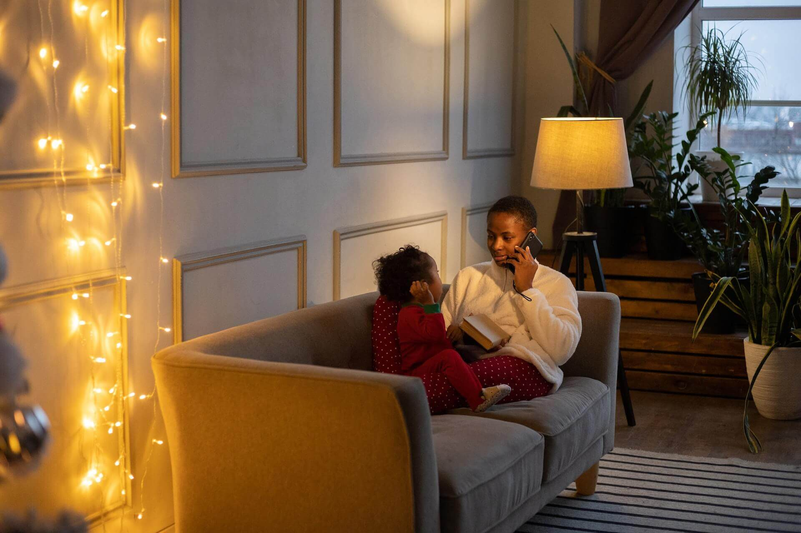

Thetahealing® pour enfants et adolescents
Il arrive qu’à un moment donné de la vie d’un jeune, il survient des évènements soudains, inexplicables voir incontrôlables comme un mal être soudain, une violence verbale et physique, des dégouts pour la scolarité ou la vie, des pleurs fréquents ...
Parfois des éléments doivent être déjà réglés à son âge mais cela perdure, peut-être une peur de grandir, faire savoir un message, mais lequel ?
Tous ces éléments ont des conséquences sur la sérénité des parents et l’univers familial, l’épanouissement de l’enfant.
La pratique holistique est la méthode la plus rapide pour aider à comprendre et surtout à libérer des phénomènes qui sont la causes de ses blocages, et situations qui affectent la croissance, le développement, la sérénité et la joie de vivre de l’enfant ou de l’adolescent et qui impactent la vie de famille, la relation avec la fratrie...
- Travail sur les peurs, phobies, blocages affectifs, blessures de naissance (relationnels, émotionnels...) conscients ou inconscients
- Déprogrammer des programmations erronées ou les schémas de reproduction
- Améliorer la relation aux autres (familial, amical)
- Avoir confiance en soi (absence de légitimité), lacher-prise
- Guérir de l’abandon, du rejet, de l’humiliation, de la culpabilité, et retrouver le goût pour la vie, la réussite...
- Comprendre et débloquer des situations complexes ou des troubles et comportements particuliers
- Mettre des mots sur les difficultés de concentration, d’apprentissage, d’attention permettant de meilleurs résultats
Que pouvez-vous attendre de nos sessions ?
N’hésitez pas à nous questionner sur vos besoins particuliers.
Comment se déroule une session ?
- Au centre en face à face
- À distance via WhatsApp vidéo, Zoom, Teams
Il n’y a pas de session type. Chaque session est unique. Tout dépend de l’axe choisi en fonction de la problématique et des champs d’informations concernés. Présence d’un parent obligatoire.
Conditions : être bien hydraté.
Tarifs :
Session d’une heure : 80 €
Session de 2 heures : 120 €
Forfait de 3 sessions : 200 € (paiement en 4 fois possible par paypal)
Les modalités de paiement sont données dans le mail de réservation.